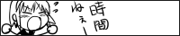

Twitter 代わりのオレオレ・マイクロ・ブログ。
2002～2005年頃までに作っていたバナーを再掲。
 (
(http://www.n-yaruki.sh49.net/リンク切れ)- 

オナシャス！
このサイトに関するその他のページ :
このウェブサイトは、管理人 Neo の趣味に関するコンテンツを公開しています。主にウェブサイト作成、プログラミング、音楽、映画、ゲームに関するコンテンツを扱っています。
本ウェブサイトのドメインは https://neos21.net/ です。2002年10月のサイト開設からは2020年11月までは http://neo.s21.xrea.com/ で運営していました。
本ウェブサイトの内容は、正しい情報を提供するよう努めていますが、本ウェブサイトおよびリンク先からいかなる不利益が生じても、一切の責任を負いかねます。
特に Blog は、口が悪いです。言いたいことを独り言として好き勝手言っているだけで、誰かと議論する気はありませんので、引っかかることがあっても反応しなくて良いです。誤字脱字や明確な誤りについては指摘をいただき次第修正しますが、宗教論争や好みの問題は無視します。はてなブックマークや Twitter 等の SNS は定期的にチェックしていますので、雑にコメントされていた場合はこちらも跳ね返します。予めお含みおきください。
このウェブサイトの内容に関してご意見・ご指摘などがありましたら、GitHub Discussions かメールにてご連絡ください。
このウェブサイトの更新情報や最新のブログ投稿を配信しています。
Feedly で購読する際はコチラのリンクからドウゾ。
サイト内を検索したい場合はコチラからドウゾ。
また、このサイトは OpenSearch に対応しています。ブラウザのアドレスバーで neos21.net の後にスペースを入力すると、アドレスバーから直接サイト内検索ができます。
このサイトのソースコードは GitHub で公開しています。GitHub Issues での連絡はコチラからドウゾ。
このウェブサイトの運営や OSS 活動を支援してくださる方を募集しています。
管理人にメールを送りたい場合はコチラまでドウゾ。
Twitter 代わりのオレオレ・マイクロ・ブログ。
2002～2005年頃までに作っていたバナーを再掲。
http://www.n-yaruki.sh49.net/ リンク切れ)オナシャス！